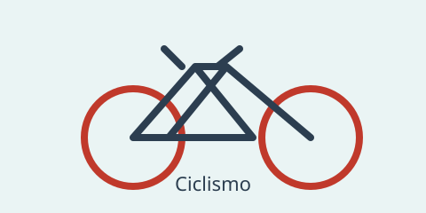

Por qué me gusta

Me gusta montar en bici porque puedo hacer deporte y salir a dar una vuelta. Lo mejor es disfrutar del camino y tener cuidado con el tráfico.
También puedo visitar parques y caminos que están cerca de mi casa.
Lo bueno de montar
- Hago ejercicio.
- Estoy al aire libre.
- Puedo ir a sitios cercanos.
- Es una actividad para hacer con amigos.
Siempre conviene llevar casco y revisar la bicicleta antes de salir.
Mis rutas
Estas son algunas rutas que se pueden hacer según el tiempo disponible:
| Ruta | Distancia | Dificultad |
|---|---|---|
| Vuelta al parque | 5 km | Fácil |
| Camino del rio | 12 km | Media |
| Subida a la montaña | 25 km | Alta |
Más información
Para consultar recomendaciones generales, se puede visitar la página de Wikipedia sobre ciclismo.